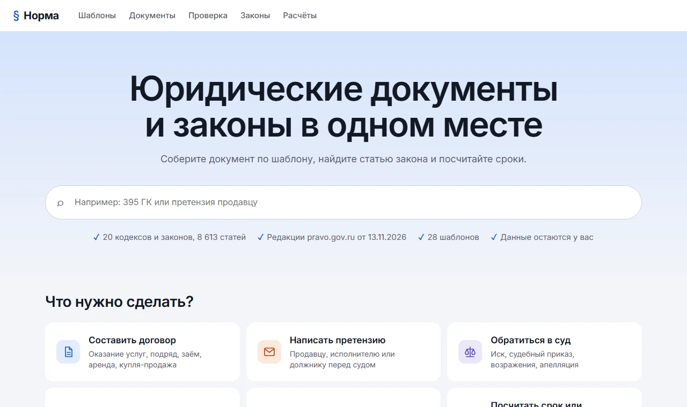

Правовая система для работы с документами и законами
Шаблоны документов, официальные тексты кодексов с редакциями, проверка ссылок и расчёт сроков — в одном окне.
Сейчас идёт ранний доступ: напишите нам в Telegram, и мы откроем вам «Норму».

Всё для юридической работы в одном месте
Не нужно держать открытыми справочную систему, текстовый редактор и калькулятор: в «Норме» они работают вместе.
-
Документы по шаблонам
Договоры, претензии, иски и жалобы в суды общей юрисдикции и арбитраж, банкротство, трудовые, налоговые и наследственные документы, доверенности. Заполняете поля — документ собирается рядом, суммы пишутся прописью, пошлина считается сама. Готовый файл — в Word.
-
Законы с редакциями
Конституция, кодексы и законы в официальной редакции: оглавление, ссылки между статьями, прежние редакции и изменения, которые только вступят в силу.
-
Проверка документов
Загрузите файл Word: «Норма» найдёт ссылки на несуществующие и утратившие силу статьи, лишние части и невозможные даты. Можно сверить с редакцией на дату документа.
-
Сроки и расчёты
Последний день процессуального срока по ГПК, АПК, ГК, ТК и КоАП с производственным календарём. Госпошлина, проценты по статье 395 ГК РФ, неустойка.
-
Изменения законодательства
Лента по датам: что изменилось недавно и что вступит в силу. Будущую редакцию статьи можно открыть заранее.
-
Поиск по всему
Одна строка для всего: «395 ГК» откроет статью, «иск о разводе» — нужный шаблон, «срок апелляции» — калькулятор.
Для кого
- Иск и претензия за минуты. Шаблон подставит подсудность, посчитает пошлину и цену иска.
- Ни одной устаревшей ссылки. Проверка покажет статьи, которые утратили силу или не существуют.
- Сроки без ошибок. Последний день обжалования с учётом выходных и переносов.
- Суд, арбитраж, банкротство, налоги. Иски, жалобы и ходатайства по видам, поиск шаблона по слову и статье закона.
- Основы законодательства о нотариате и связанные кодексы в действующей редакции.
- Доверенности и соглашения по шаблонам с понятными полями.
- Наследственные документы: завещание, наследственный договор, отказ от наследства, раздел наследства — проекты для нотариуса.
- Изменения заранее. Видно, какие нормы поменяются и с какой даты.
- Договоры поставки, услуг, аренды с условиями, которые меняются под ваш случай.
- Документы по ООО: учреждение, выход участника, продажа доли, протокол собрания, крупная сделка.
- Претензия должнику и проценты по ключевой ставке Банка России с разбивкой по периодам.
- Законы об ООО и АО, Налоговый кодекс под рукой, с поиском по словам.
- Понятные шаблоны: претензия в магазин, заявление об увольнении, договор займа.
- Поиск простыми словами: «вернуть деньги за товар» найдёт нужную претензию.
- Кодексы для учёбы с оглавлением, ссылками между статьями и историей редакций.
Почему Норма
Официальные источники
Тексты законов берутся с Официального интернет-портала правовой информации pravo.gov.ru, Конституция с официального сайта Президента kremlin.ru, а не с чужих сайтов.
Редакция на нужную дату
Видно, какой текст действовал в день договора или спора, и что изменится в будущем.
Ваши данные остаются у вас
Документы, которые вы заполняете, хранятся в вашем браузере и никуда не отправляются.
Понятно без подготовки
Простые формулировки, подсказки к полям и пустые места подсвечены, чтобы ничего не пропустить.
Как начать
Напишите нам
В Telegram, пару слов о том, чем вы занимаетесь.
Получите доступ
Мы откроем «Норму» и расскажем, с чего начать.
Работайте
Составляйте документы, проверяйте ссылки и следите за изменениями.
Вопросы
Сколько это стоит?
Сейчас идёт ранний доступ, и для участников он бесплатный. О тарифах мы расскажем заранее, до того как они начнут действовать.
Откуда тексты законов?
С портала «Тексты правовых актов с внесенными изменениями» Официального интернет-портала правовой информации (pravo.gov.ru). Там есть все редакции с июля 2022 года. Конституции на этом портале нет с текстом, её берём с официального сайта Президента России kremlin.ru.
Можно ли пользоваться шаблонами без юриста?
Шаблоны составлены по текстам законов, но практикующий юрист их ещё не проверял. Перед тем как подписать или подать документ, прочитайте его внимательно, а в сложной ситуации покажите юристу.
Где хранятся мои документы?
Только в вашем браузере. Мы их не получаем и не видим. Важные документы сохраняйте в Word.
Будет ли искусственный интеллект?
Да. Помощник будет отвечать со ссылками на нормы из той же официальной базы, а не на догадки модели.
Присоединяйтесь к раннему доступу
Напишите нам в Telegram — откроем доступ и поможем начать.